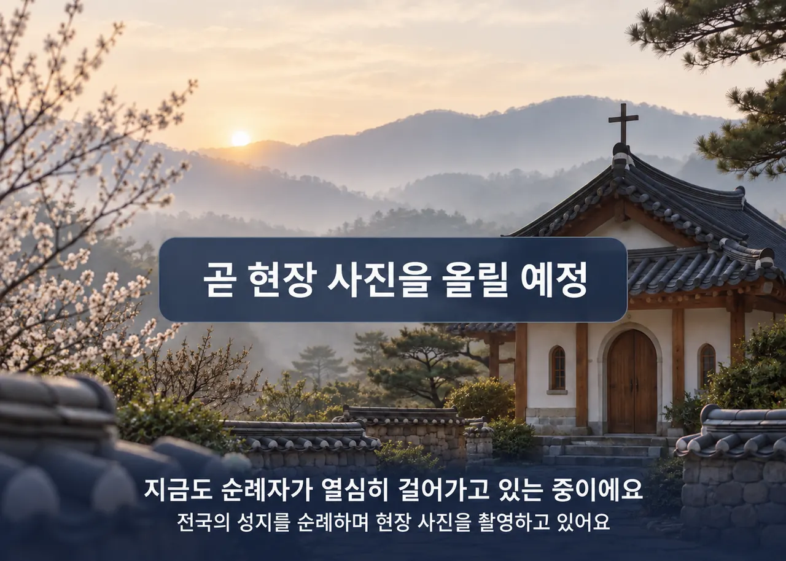

고요한 성지로 초대합니다.
이 문서 하나가 화면을 만드는 모든 사람의 기준이다. 여기 없는 색·글꼴·모양은 쓰지 않는다. 바꾸고 싶으면 이 문서를 먼저 고치고 팀에 알린다. 위쪽 <style> 의 :root 블록이 그대로 src/shared/styles/globals.css 에 들어갈 값이다 — 견본 컴포넌트는 전부 그 변수로만 그려져 있다.
근거: 9/14 팀 피드백 12건 · 9/15 팀 검토(우선순위 문서) · 9/15~16 사장님 결정(브리핑 문서) · 기존 브랜드 자산(public/brand, public/logo.png). 상태: 9/16 14:00 회의에서 확정 대상.
원칙 다섯
rounded-[28px]) · 이모지 아이콘 · 대문자 자간 라벨을 큰 제목에 · Inter 글꼴 · 화면마다 다른 제목 스타일 · 10px 글자.색
로고의 남색을 기준으로 잡았다. 로고의 하늘색·금 십자가는 로고 안에서만 쓴다.
버튼 · 링크 · 활성 탭 · 포커스 테두리 · 카드의 강조 숫자
남색의 연한 판 — 선택 상태 배경
분류 칩 켜짐 · 카드 표시(도슨트) · 상세 분류 글자 · 일정 첫 문장 띠 · 작은 라벨
올리브의 연한 판
본문 글자
보조 글자. 흰 바탕 대비 6.4:1
선 · 테두리 · 구분
홈 · 목록 · 검색 바탕
상세 · 일정 결과 · 기록 바탕
바탕 위 한 단계 낮은 판(표 머리 · 입력칸 배경)
신호등 — 인근 붐빔만
규칙
- 남색 배경 위 글자는 흰색. 올리브 배경 위 글자도 흰색. 연한 판 위에는 그 색의 진한 글자.
- 한 화면에 남색으로 채운 버튼(primary)은 하나. 나머지는 테두리형이나 글자형.
- 붐빔 3색은 배지 안에서만. 버튼·링크·제목에 쓰지 않는다.
- 그라데이션은 사진 위 글자 가독용 검정 그라데이션 하나만 허용.
글꼴과 크기
화면 제목(h1)·섹션 제목(h2)·상세 성지 이름·히어로 문구. "성지의 정적인 느낌". 굵기 700만.
그 밖의 모든 글자. 400 · 500 · 700. 영문·숫자도 같은 글꼴(Inter 는 걷어낸다 — 한글과 섞여 튄다).
크기 단계 (rem · 글자 「소」 기준 16px)
- 글자 「중」은 112%, 「대」는 125% — 전부 rem 이라 자동으로 따라온다. px 로 못 박은 글자 금지.
- 한 줄은 70자 안쪽. 한국어 줄바꿈은
break-keep(단어 중간에서 안 갈림). - 사진 위 글자는 흰색 +
text-shadow 0 1px 8px rgba(0,0,0,.5), 아래 55% 검정 그라데이션.
간격 · 모서리 · 그림자 · 아이콘
0 6px 24px rgba(30,34,43,.10) — 바탕에서 떠야 하는 것(사진 카드 호버·시트)에만. 평소 카드는 1px 선.object-cover).브랜드 자산 (이미 있는 것)



| 자산 | 어디 | 쓰는 자리 |
|---|---|---|
| 로고 (남색 글자 · 하늘색 · 금 십자가) | public/logo.png · logo-mark-88.png | 헤더 왼쪽. 남색 외의 색은 로고 안에서만 |
| 비둘기 · 붓글씨 3색 | public/brand/dove.png · brush-navy|pink|yellow.png | 홈 인사 띠(한국어). 외국어는 같은 뜻의 글자로(greetingBanner) |
| 그림 아이콘 8종 | public/brand/*.png | 입구 카드 왼쪽 그림. 목록·상세에는 Lucide |
| 임시 이미지 6장면 × 6언어 | public/placeholders/<언어>/ | 사진 없는 성지. 규칙은 그 폴더 README |
컴포넌트 — 실제 규격으로 그린 견본
버튼
높이 44px · 글자 1rem 700 · 모서리 6px. 한 화면에 채운 버튼 하나. 아이콘은 글자 왼쪽 20px.
검색창 (히어로 위 · 헤더)
높이 48px · 흰 바탕 · 안내 문구는 ink-muted. 히어로 위에서는 사진 아래쪽 16px 안쪽에 놓고 테두리 흰색.
히어로 (홈)
사진 5장 · 6초 · 페이드 · 누르면 상세 · 점 5개 오른쪽 위 · 문구는 한 줄 명조 · 「동작 줄이기」면 정지.
입구 카드 (홈, 둘 나란히)
왼쪽은 채움, 오른쪽은 테두리 — 둘 다 남색. 폰에서는 세로로 쌓임. 사장님 그림 아이콘을 왼쪽에 넣을 수 있다(48px).
분류 칩 · 붐빔 배지
칩: 높이 32px · 켜짐은 올리브 채움. 배지: 주어는 항상 "인근" · 옆에 근거 한 줄 · 못 불러오면 "인근 붐빔 정보를 불러오지 못했어요".
성지 카드 (civitatis 식 · 3×2)
사진 4:3 · 이름 1rem 700 · 지역 + 소요시간(남색) · 표시 한 줄(올리브) + 순례자 수. 네 줄을 넘기지 않는다. 분류 배지·주소는 카드에 없다. 폰 2열 · PC 3열.
교구 둥근 버튼
64px 원 · 대표 성당 사진 · 사진 없는 교구(광주·안동·청주·군종)는 「전체 16」 안에서 글자로. 임시 이미지는 원 안에서 안 읽혀 쓰지 않는다.
상세 머리 (종이 바탕)
공세리성지성당
순서: 사진(있는 만큼 나란히) → 분류 라벨 → 명조 이름 → 주소 → 붐빔 배지 → 미사·둘러보는 시간 상자 → 버튼 → 설명글 → 지도·교통 → 기록.
하단 탭 (폰)
활성 탭만 남색. 아이콘 24px + 글자 .75rem. 「홈화면 추가」는 폰에서만, PC 에서는 숨김. ⚠ 탭 구성은 9/16 회의에서 확정.
화면 틀
| 화면 | 바탕 | 구성 (위에서 아래로) |
|---|---|---|
| 홈 | 흰색 | 헤더 → 히어로(사진 위 검색창) → 입구 2개 → 교구 둥근 버튼 줄 → 분류 칩 → 특색 성당 3×2 → (여기서 가까운 · 이번 주 축제 근처 두 줄) → 하단 탭 |
| 목록 (검색 · 교구 · 가까운) | 흰색 | 뒤로 + 제목(명조) → 분류 칩 → 카드 격자(폰 2열 · PC 3열) → 하단 탭 |
| 상세 | 종이색 | 사진(있는 만큼) → 상세 머리 → 시간 상자 → 버튼 2 → 설명글 → 지도·교통·주차 → 주변 관광(TourAPI) → 기록. 헤더·탭 없음(몰입) |
| 오늘의 성지 일정 | 흰색 → 결과는 종이색 | 인사말 + 마음 이모지 5 → 질문 5개(고르면 자동 진행) → 결과: 첫 문장 띠(올리브) → 일정 2~3줄 → [다른 성지로] → 한 줄 남기기 |
| 기록 · 전체(더보기) | 종이색 | 제목(명조) → 항목은 가로 나열, 배경색 판으로 묶음(세로로 길게 안 늘임) |
접근성 — 심사 감점을 막는 최소선
- 글자 대비 4.5:1 이상 (ink-muted 6.4:1, 올리브 위 흰 글자 4.6:1, 남색 위 흰 글자 11:1).
- 누르는 것 44×44px 이상. 칩은 32px 이지만 좌우 여백으로 44px 확보.
- 키보드 포커스: 남색 3px 테두리, 2px 띄움(
:focus-visible). - 글자 「대」에서 잘림·겹침 없음 — 스크린샷으로 확인(
chrome-analyze스킬). - 자동 넘김은 「동작 줄이기」 존중 + 손대면 멈춤 + 점으로 수동 이동.
- 이미지 alt 는 성지 이름. 임시 이미지 alt 는 "사진 준비 중 — 이름".
코드 대응 — globals.css 에 이렇게 들어간다
| 지금 (9/16 main) | 바꿀 값 | 비고 |
|---|---|---|
--font-sans: 'Inter', … | 'Noto Sans KR', 'Malgun Gothic', sans-serif | index.html 의 Inter 링크도 Noto Sans KR 로 |
--font-display: 'Gowun Batang' | 그대로 | 정의만 있고 안 쓰였음 → h1·h2·상세 이름에 실제 적용(PageTitle 공용 부품) |
--color-brand-blue: #1e3a8a | --color-brand: #1F2F55 | 이름도 바꾼다. blue/violet 둘이던 것을 하나로 |
--color-brand-violet: #7c3aed | 삭제 → --color-second: #6E7F5C | 보라를 쓰던 자리를 전부 점검: 버튼이면 brand, 표시면 second |
--color-app-bg: #f8f9fa | --color-bg: #FFFFFF + --color-paper: #F5F3EE | 홈/목록은 bg, 상세/일정/기록은 paper |
--color-app-border: #f1f3f5 | --color-line: #DDD8CF | 지금 선이 너무 연해 카드 경계가 안 보였음 |
--color-app-text-muted: #495057 | --color-ink-muted: #5E6470 | |
| (없음) | --color-ok/warn/bad + -soft | 붐빔 배지 전용 |
rounded-[28px] 29개 파일 | rounded-lg(8px) | 한 번에 치환. 합친 직후 30분 안에 |
bg-gradient-to-br from-brand-violet… 4개 파일 | 단색 bg-brand |
순서: 토큰 두 파일(globals.css · index.html) 먼저 합치고 → 반경·그라데이션 치환 → 화면별 조정. 팀 문서의 design/tokens 브랜치 절 그대로.